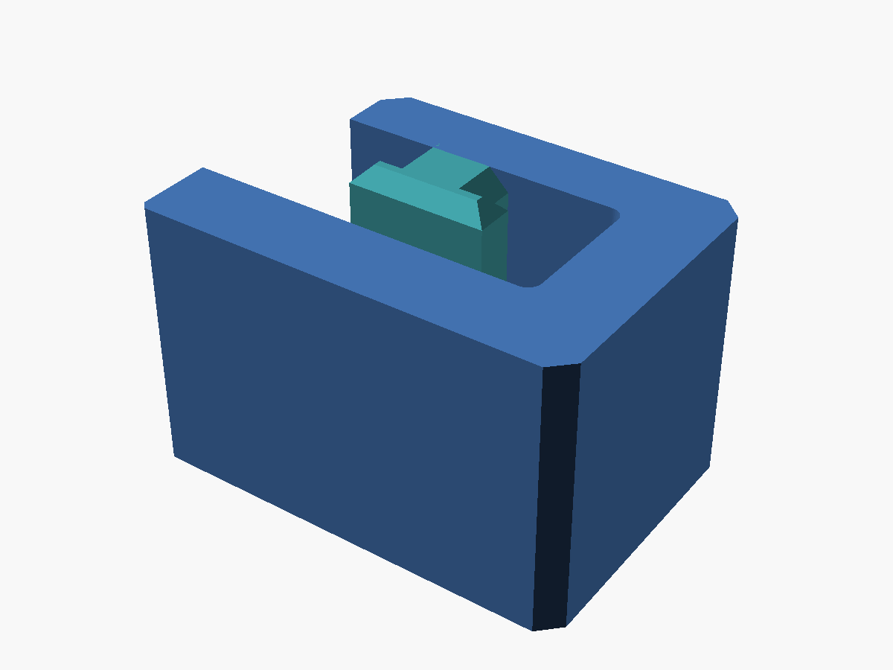
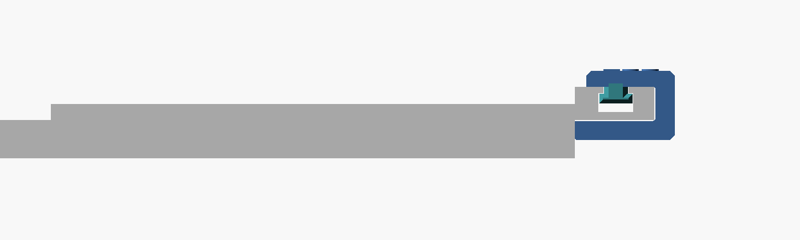
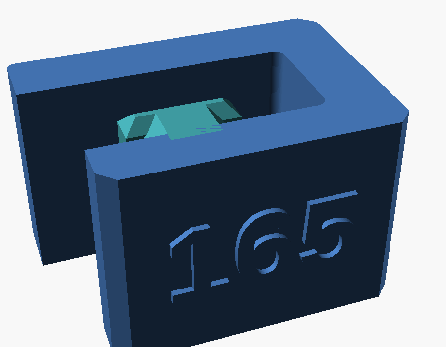

Cutting a stack of strips the same width with a guide rail means measuring and marking every one. This clip removes the measuring. It hooks into the T-slot along the back edge of a Festool FS rail, wraps around that edge, and returns under the rail as a thin leg. The end of the leg is a stop: push the edge of the board against it and the rail's cutting edge sits 165mm in.

Looking along the rail, the key sits in the top slot and the C wraps the back edge. The leg under the rail should match the thickness of the board being cut, so it stands on the bench and holds up the back of the rail instead of letting it tip. The model makes the leg 0.3mm thinner than the material so it never lifts the rail. The one I printed has a 6mm leg, for 6.3mm stock.

The strip width is embossed on the top of the jig. It is generated from the same parameter that places the stop, so change the width and the label follows.

Calibrating it
I could not find a published drawing of the rail profile, so the first print used estimated dimensions. Set to 160mm, it cut 165mm. Rather than move anything, I corrected the rail width in the model by 5mm and set the cut to 165, which leaves the printed geometry identical and makes the label honest. The key neck also went up by 1mm. There is still over 1mm of play in the slot, but pushing the board against the stop takes it up the same way every time, so the cut repeats.
Use two, one near each end of the rail, so the strip stays parallel.
It prints on its side with no supports. The source is on GitHub at morganp/openscad-festool-thincut. The Customizer shows three parameters:
cut_offset: the strip width, 10 to 168mm. The embossed label follows it.material_t: the thickness of the stock being cut, which sets the leg under the rail.jig_len: the length of the jig along the rail.
The rail fitting dimensions are hidden in the source, along with offset_trim to fine tune the width after a test cut.
It is also on MakerWorld with the 165mm print profile, and the Customize button there sets the same three parameters in the browser.